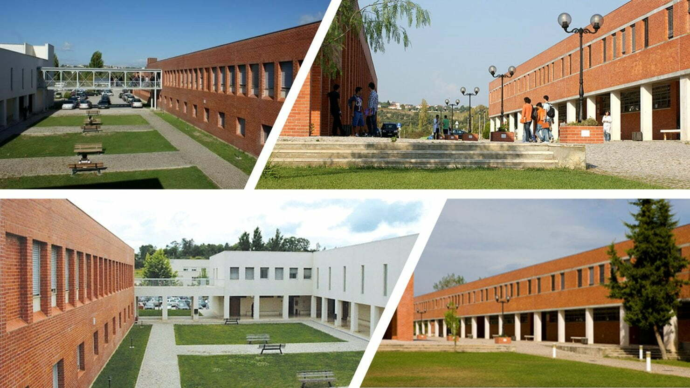

Raul Lino da Silva foi uma das grandes figuras da arquitetura lusitana com bastantes obras em Abrantes, das quais a mais conhecida é a Assembleia de Abrantes. Uma personalidade única no que se refere ao panorama das artes em Portugal, muito devido ao facto de ter conseguido articular a tradição portuguesa com as inovadoras correntes europeias do início do século. Também é importante referir que apesar do seu leque de projetos, ele também foi um homem com uma vasta obra teórica ou escrita, o que se tornou muito determinante, para os seus seguidores aos longo de décadas em Portugal.
Ao longo dos seus 70 anos de artista e arquiteto, defendeu a tradição na conceção das formas, afirmando que a arte e a arquitetura são elas também um produto do homem e para os homens, com história, genealogia, características e funcionalidades próprias do espaço e do tempo em que se inserem e da comunidade para que são produzidas. É, assim, um defensor da tradição versus modernismo ou um modernista da tradição.
Este projeto foi desenvolvido no âmbito da Unidade Curricular de Projeto Final da licenciatura em Engenharia Informática, ano letivo 2021/2022, na Escola Superior de Tecnologia de Tomar do Instituto Politécnico de Tomar. Juntamente com a equipa do Techn&Art e os coordenador do IPT, o professor Paulo Santos.
O projeto apresentado identifica, localiza, analisa, interpreta e sistematiza os projetos de arquitetura de Raul Lino que foram construídos no concelho de Abrantes, contribuindo para aprofundar o conhecimento da sua obra.
Esse mesmo conhecimento é, assim, acessível ao público, através do desenvolvimento deste produto que envolve reduzidos efeitos nocivos ao meio ambiente, e cujo funcionamento é compatível com dispositivos móveis amplamente utilizados na sociedade atual, permitindo um fácil acesso à informação, a qualquer hora e em qualquer lugar.
 Mapa
Mapa